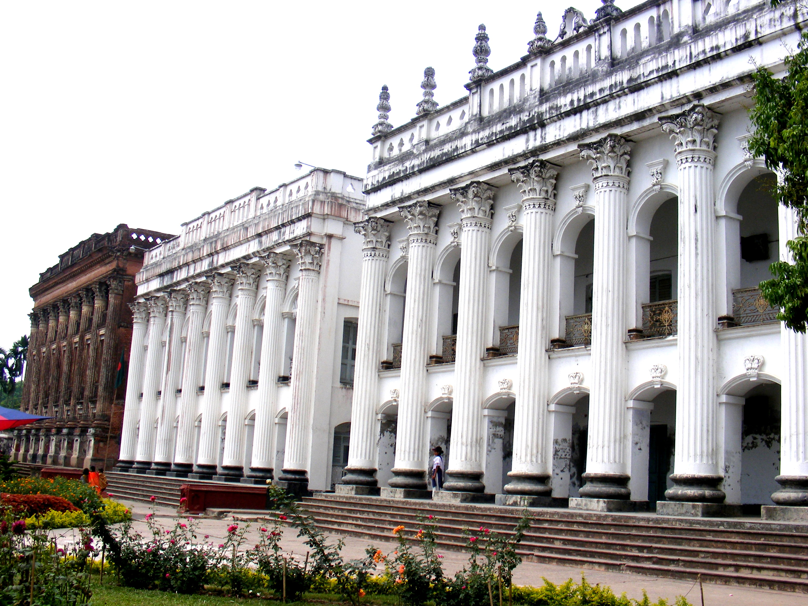
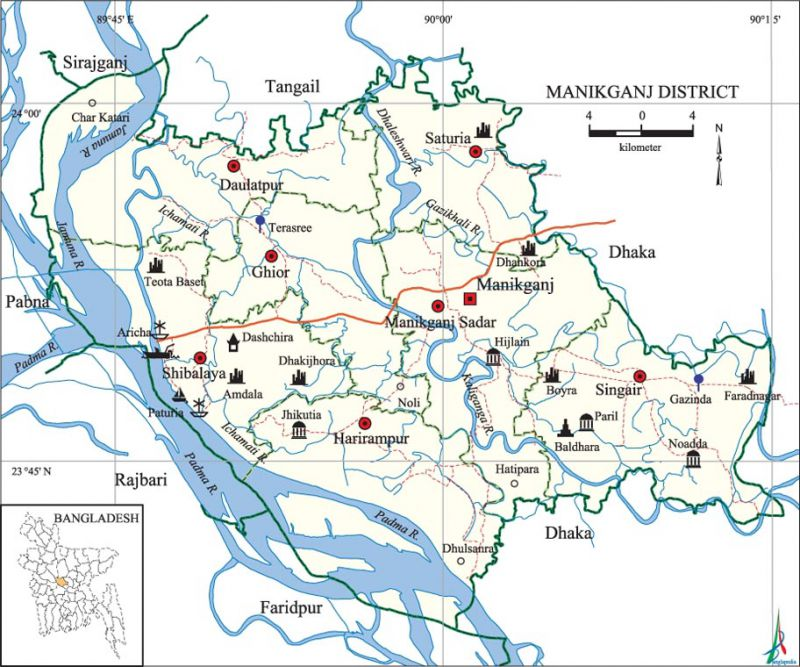

Manikganj
My hometown is Manikganj.
Manikganj District (Bengali: মানিকগঞ্জ জেলা, romanized: Mānikgoñj Jela; Bengali pronunciation: [mɑnɪkˈɡondʒ]) is a district in central Bangladesh and part of the Dhaka Division.
It was established in 1845 as a subdivision of Faridpur District, then in 1953, it was transferred to Dhaka District for administrative purposes.
Finally in 1984, Manikganj was declared a full district.
Picture of a historical place:

Map of Manikganj:
